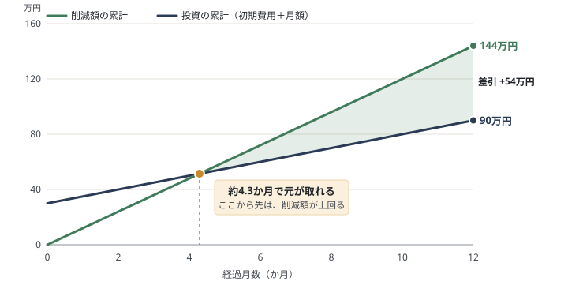
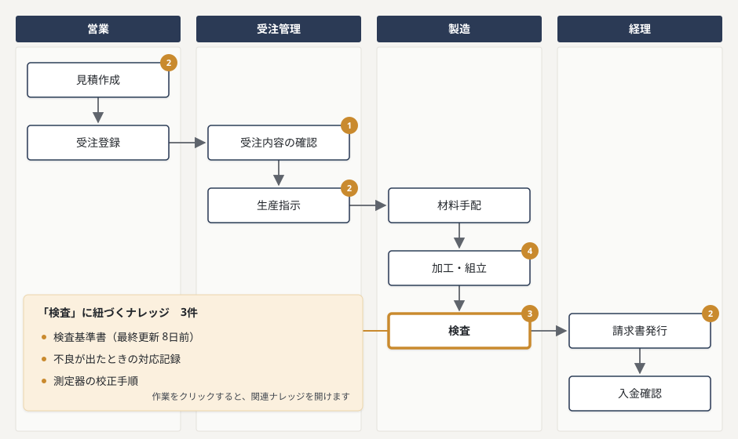
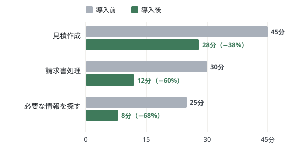

ダッシュボード
今日の状況 — 2026年9月21日（月）
未対応の改善提案
4
滞留中のワークフロー
2
要確認ナレッジ
3
最近の通知
「経費精算の手順」が62日間更新されていません09:14
「出張申請 #128」が承認ステップで5日間停滞08:40
改善提案「経費精算の締め日を見直したい」に書き込みがありました昨日
「新入社員オンボーディング」の更新案が採用されました昨日
導入の効果（例）

業務フロー
会社の仕事の流れを部門ごとに図にし、各作業に「読むべきナレッジ」を紐づけます。作業ごとの手順や過去の対応記録を、その場で開けます。

ナレッジ一覧
社内のマニュアル・過去の対応記録などのナレッジ
ナレッジ詳細
経費精算の手順
経費精算の手順
1. 対象範囲
業務に必要な交通費・消耗品費・接待費を対象とする。上限は部署ごとの予算枠に準じる。
2. 申請の流れ
領収書を添付のうえ、システム上のワークフロー「経費申請」から起票する。承認者は直属の上長。
3. 締め日
毎月25日締め、翌月10日払い。締め日を過ぎた申請は翌々月払いとなる。
AI更新案
「締め日」の記載が旧ルールのままです。現行の経費規定（25日締め）との整合を確認し、反映することを提案します。
更新履歴
2026-07-22 ・ 田中が編集
2026-03-01 ・ 更新案を採用
2025-11-14 ・ 初版作成
ワークフロー実行
出張申請 #128 ／ 申請者: 佐藤
✓
申請
2
上長承認
3
経理確認
4
完了
気づき・改善提案
現場で気づいたこと（手順が実態と違う、こうすると不良が減る、など）を書き残す場所です。管理者が採用すると、ナレッジに反映されます。
← 気づき・改善提案の一覧へ
未対応
経費精算の締め日を見直したい
月末が休日の場合、25日締めだと入力が間に合わないことがあります。締め日を営業日ベースにできないか検討してほしいです。
掲示板（2件）
田
経理側でも同じ悩みがあります。営業日ベースなら差し戻しはかなり減りそうです。
鈴
まず来月分だけ試験的に営業日ベースにしてみて、結果を実施結果に残すのはどうでしょう。
効果測定
導入の効果を、作業時間の変化と「いつ元が取れるか」で見える化します。数字は例です。
年間の削減額
144万円
投資額（12か月）
90万円
差引（削減額 − 投資額）
+54万円
回収の目安
4.3か月
いつ元が取れるか：累計の推移
導入前後の作業時間（1件あたり）

通知設定
Slackが使えない環境でも、メール通知だけで運用できます
Slack通知
改善提案・滞留アラートをSlackへ送信
メール通知
Slack未使用時の代替チャネル
通知対象
すべて ／ 提案のみ ／ ワークフローのみ